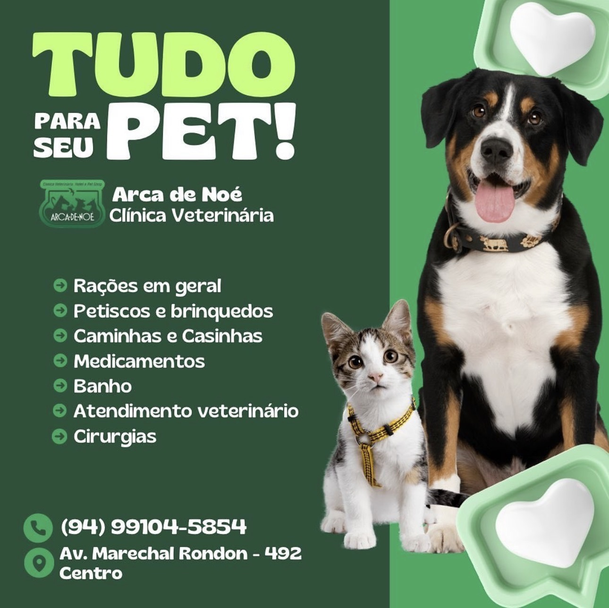

Consultas e avaliação clínica
Atendimento com anamnese, exame físico completo, definição diagnóstica inicial e plano terapêutico individualizado.


Separamos o que é atendimento clínico do que é linha de produtos, para facilitar a leitura e destacar com mais clareza a estrutura técnica da clínica veterinária.
Estrutura voltada para avaliação clínica, definição de conduta, suporte terapêutico e acompanhamento de casos agudos e de rotina.
Atendimento com anamnese, exame físico completo, definição diagnóstica inicial e plano terapêutico individualizado.
Protocolos vacinais, controle parasitário, orientação preventiva e acompanhamento periódico para cães e gatos.
Solicitação e interpretação clínica de exames laboratoriais e complementares para apoiar condutas com mais precisão.
Procedimentos eletivos e cirúrgicos com avaliação pré-operatória, acompanhamento pós-cirúrgico e anestesia monitorada.
Suporte para casos emergenciais com triagem rápida, estabilização inicial e encaminhamento terapêutico imediato.
Administração, prescrição e acompanhamento de medicamentos conforme quadro clínico e resposta do paciente.
Seleção de itens para alimentação, higiene, descanso e entretenimento, reunindo o essencial para o cuidado diário do pet em um só lugar.
Linhas para diferentes portes, idades e necessidades nutricionais, incluindo opções premium e especiais.
Itens para reforço positivo, distração, gasto de energia e enriquecimento ambiental no dia a dia.
Produtos pensados para conforto, proteção térmica e melhor adaptação do pet ao ambiente doméstico.
Cuidados de limpeza e manutenção da rotina higiênica, com foco em conforto e apresentação do animal.
Porque cachorro e gato não leem agenda. Quando o caos resolve aparecer, a clínica conta com atendimento emergencial 24 horas.
07:30h às 18:30
07:30h às 15:30
Atendimento 24h